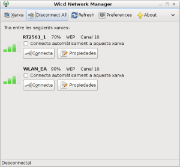
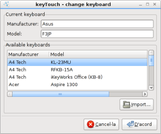

Mejoras Substanciales de PulseAudio
Esta versión de kademar hemos mejorado enormemente el servidor de sonido para ofrecer una configuración perfecta, como nunca antes había estado.
- Mejoras de Rendimiento
- Mejora en la integración con Iceweasel/Firefox
- Mejoras de Seguridad
Ext4 por defecto
 Por fin, después de un error importante en las antiguas configuraciones del nucleo de Linux, se han solucionado, pudiendo ya implementar de manera segura el sistema de archivos de última generación Ext4.
Por fin, después de un error importante en las antiguas configuraciones del nucleo de Linux, se han solucionado, pudiendo ya implementar de manera segura el sistema de archivos de última generación Ext4.
WiCD, como substituto a NetworkManager

Ahora incorporamos la nueva versión de WiCD como el gestor de redes por defecto.
- Mejoras de encriptación
- Mejor soporte a redes cableadas y wifi
Nuevo gestor de Teclados Multimedia

La herramienta de configuración CADI ahora usa un nuevo gestor más completo y perfeciconado de teclados multimedia. Con soporte a todos los escritorios
Kernel 2.6.31.5
 kademar trae consigo una versión actualizada del nucleo. Más rápido, más seguro y con mucho más soporte a dispositivos.
kademar trae consigo una versión actualizada del nucleo. Más rápido, más seguro y con mucho más soporte a dispositivos.
- Compilado para 686
- Más rapido
- Más seguro
- Nvidia 185.18.36
- Mejoras muy notables en cantidad de dispositivos detectados
- Módulos de Speakup
- Modulos de Ndiswrapper
Instalador

- Ext4 por defecto
- Soporte inicial a Grub2
- Mejor soporte a update-grub de Debian
- Ahora avisa exactamente qué particiones se van a formatear
- Mejorado el borrado de programas con licencias no-libres. (VRMS ahora da un sistema 100% libre)
- Uso de repositorios 100% libres, si se selecciona
- Ahora kademar incorpora la versión en modo consola del instalador para optimizar recursos en máquinas más modestas
- Mejoras sutiles en la interfaz gráfica
- Corregidas traducciones al catalán
Linux Standard Base
 kademar ahora cumple más las estandarizaciones de LSB en sus versiones, y eso la hace más compatible con algunos programas de debian, para detectar la distribución.
kademar ahora cumple más las estandarizaciones de LSB en sus versiones, y eso la hace más compatible con algunos programas de debian, para detectar la distribución.
También se ha congelado la versión a Lenny, para que no haya problemas posteriores en actualizaciones.
- Uso de lsb_release
- Acactualizado Debian Lenny y backports
- Uso de Lenny 100% congelado
Y Más...
- Mejorada configuración del escritorio alternativo LXDE
- Mejor respuesta en sistemas con alto uso de disco duro (heavy disk usage)
- Soporte a MS Office 2007 desde konqueror (gracias Pere)
- Live-CD con "guardar cambios" desplazado en segundo lugar
- Splashy con memoria reservada (no se escribe texto encima de la barra de carga)
- Mejorado soporte a broadcom
- Mejorada velocidad de Iceweasel/Firefox
- kademarstart
- Mejorados permisos de montaje
- Mejorado enormemente la velocidad de montaje
- Corregidos errores gráficos
- Borrados botones no usados
- Instalados programas que se borraron: kgamma, kompare, timidity
- Recuperado soporte a Lightscribe
- Borrada configuración de modem 3g toshiba g450
- Borrados archivos de desarrollo en los skins de audacious
- Añadido parámetro "nox" para iniciar sin sesión gráfica
- Cambios en los repositorios
- Cambios en el arranque gráfico (grub-gfxboot)
- Mejorada detección de particiones de intercambio en live-cd (gracias Pere)
- Ajustado lista de programas del Menu K (gracias Pere)
- Volumen más bajo en live-cd (gracias Pere)
- Mejorado soporte a FlashPlayer (gracias Pere)
- Añadido icono a unison (gracias Pere)
Versión Anterior
kademar 4.9 - Notas de la Versión
Basada en Debian Lenny
Después de no estár 100% de acuerdo de la política que Debian está siguiendo para su versión Squeeze, kademar se ha basado en Debian Lenny, hasta que decidamos cual será el futuro de kademar.
CADI
- Módulo de GRUB en instalado añadido
- Configuracion de Internet en threads (no bloquea)
- Ocultar el paso de pedir IP por defecto
- Optimizar la configuración de internet
- Optimizar el fichero de configuración de internet
- Parámetros de inicio concretos
kademarcenter
- Apartado de configuración - tema de computación invasiva (bug id 1)
- Iniciar el módulo de CADI de ineternet (eth y wifi)
- Montaje de los dispositivos desde donde arrancas
Instalador
Nueva versión del instalador, con muchas mejoras, y preparación a lo que deberá llevar
- Posibilidad de hacer una instalación 100% libre
- Corregido: a veces no contaba el progreso
- Mejorado el Instalador (opción sin Grub - comentado en foro)
- Soporte a particiones no formateadas (bug id 2)
- Interfaz rediseñada completamente.
- GUI entera en inglés y traducida:
fbsplash, el substituto de splashy
Después de haber tenido problemas con splashy, hemos optado por un mejor arranque gráfico. Ahora hay más compatibilidad con los ordenadores.
NTFS Autofix
Cuando usamos otros sistemas operativos que usan el sistema de archivos NTFS y se cierran mal, la partición queda corrupta y no se puede escribir en ella.
Ahora se arreglan automáticamente, para que se puedan escribir, sólo arrancando kademar y usándola normalmente.
Y Más...
- Audioconversor
- Si seleccionas no crear carpeta, vuelve atrás
- Mejoras que han recibido todos los programas de kademar
- Cambiados los fondos
- Programas a 800x600
- Adecuado al nuevo logo de kademar
- Nucleo 2.6.29 - Con mucho más soporte a dispositivos de todo tipo
- K-DEMar -> kademar
- Configuración de idioma de IceWeasel
- Configure /etc/apt/pinning - Varias versiones sin problemas
- KDE 3.5.10 - Mejorado
- Mejorada la intgración de openoffice con kde
- Wine 1.1.26
- Borrado de carpetas temporales residuales
- Versión de grub anterior, más compatibilidad
- Desactivado soporte ext4, temporalmente
- nVidia drivers 185.18.14
- Imágenes de pc cambiadas
- Mejorados permisos de montaje
- Mejorado enormemente la velocidad de montaje
- Corregidos errores gráficos
- Borrados botones no usados
kademar 4.9 - Notas de la Versión
- Si seleccionas no crear carpeta, vuelve atrás
- Cambiados los fondos
- Programas a 800x600
- Adecuado al nuevo logo de kademar